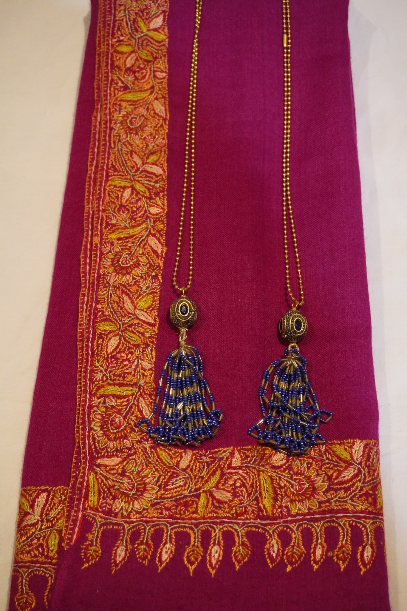

Aathor Making
Traditional pieces that preserve a meaningful Kashmiri cultural form.
The Artisans
Every handmade piece carries a story of heritage, perseverance, and opportunity.

More than craftsmanship
The women behind HemAth’s work are keepers of tradition, memory, and community. Their skills reflect generations of cultural knowledge expressed through jewelry, shawls, tea, and handcrafted presentation.
For displaced women, craftsmanship creates dignity, confidence, visibility, and a pathway toward greater independence.
Craft & Culture
Traditional pieces that preserve a meaningful Kashmiri cultural form.

Jewelry and textiles presented together to honor craft and design.

Embroidered shawls that celebrate detail, skill, and careful artistry.
Seen with dignity
HemAth believes handmade work should be presented with dignity and purpose. These products are not just items to sell. They reflect identity, patience, and care.
By supporting artisans, HemAth helps ensure that women’s work, stories, and contributions are recognized and valued.
Explore the collection →